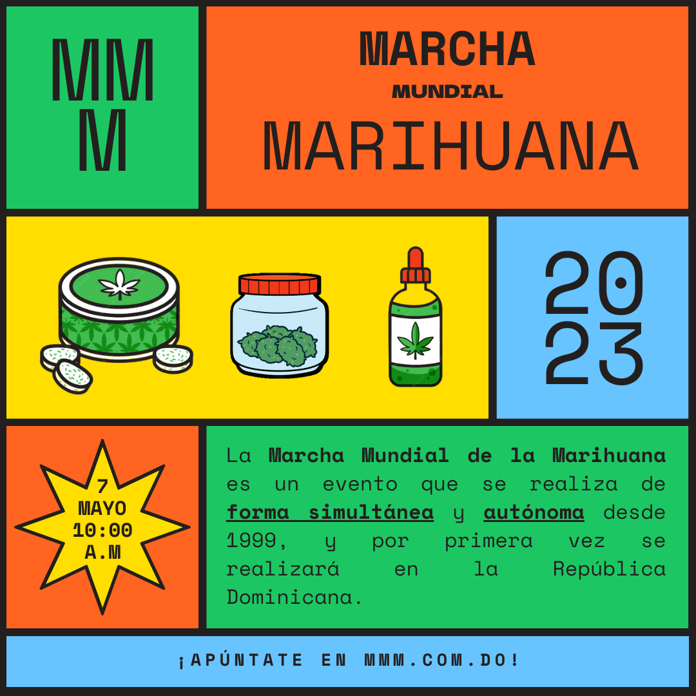
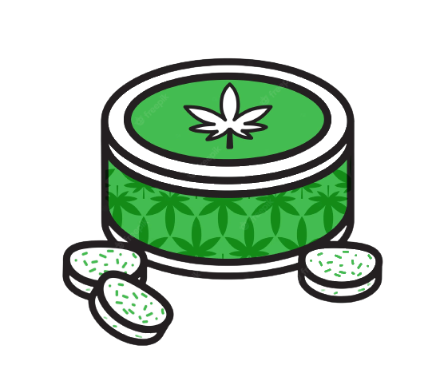
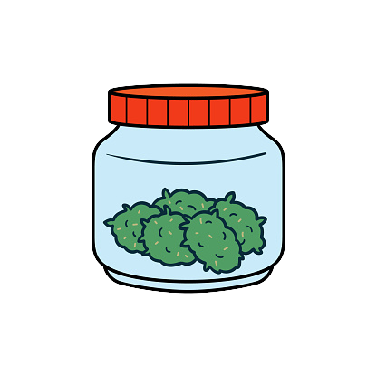
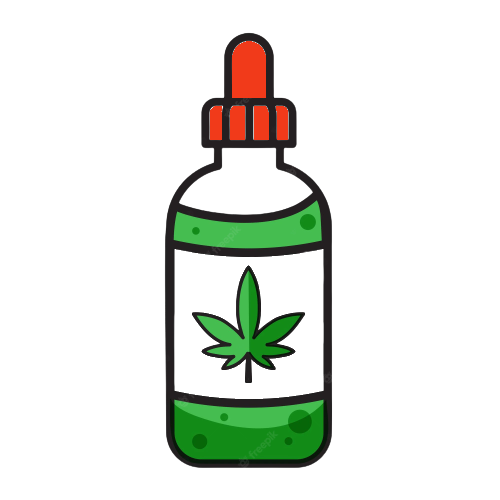
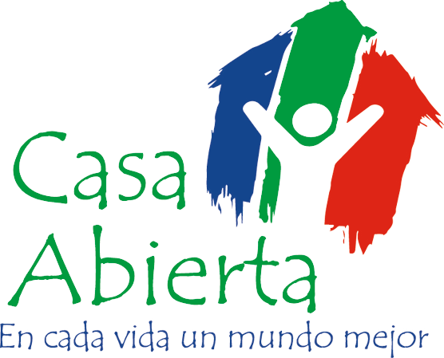
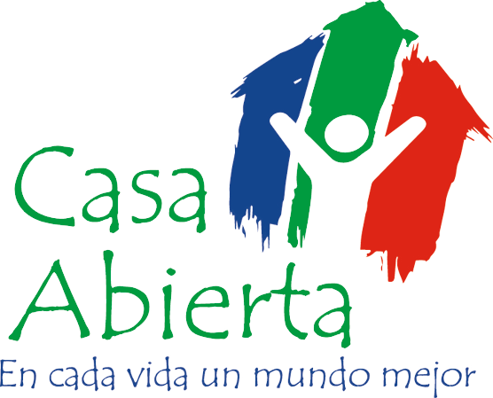

La Marcha Mundial de la Marihuana viene celebrándose desde 1999 en cientos de ciudades del mundo, sin embargo, sus reclamos saltaron de las calles y de las redes sociales a las páginas de los periódicos con más agilidad que en años pasados. Y es que el ánimo de reforma sobre la planta se ha instalado con fuerza en el debate sobre la descriminalización del consumo de drogas, impulsado tal vez por algunas “victorias”, como la legalización de la producción y del consumo recreativo de cannabis en algunos países de Latinoamérica y el mundo, y por las evidencias científicas que, progresivamente, desmontan el tabú tejido en torno a la planta Cannabis L. Sativa a.k.a. Marihuana.
MMM
Si bien las marchas ( la mayoría el 4 y otras el 11 de mayo ) tuvieron una repercusión masiva y global, Latinoamérica brilla con luz propia:
es enorme el alcance de sus mensajes y exigencias políticas en temas de descriminalización, pero también de legalización,
de su cultivo y uso. Desde Buenos Aires hasta la Ciudad de México, pasando por Quito, Bogotá, Río de Janeiro, Santiago de Chile, Lima, y
Montevideo, la conciencia de los daños que genera el prohibicionismo está creciendo y ¡qué mejor que una jornada festiva para demostrarlo!
Porque
El contexto del Cannabis en la República Dominicana es
muy desafiante. Está dominado por desinformación, prejuicios, y falsas creencias que dificultan enormemente los labores de las organizaciones nacionales que tratan el tema Cannabis / Drogas en el país. La sociedad dominicana ha normalizado la violencia generada por la lucha al narcotráfico y microtrafico al punto de deslegitimar los derechos fundamentales de las personas, así como tambien hacer imposible avances científico-académicos sobre el Cannabis. La realidad del Cannabis en el país es muy compleja debido a la demonización de la planta a través de los años y el daño humano creado por el prohibicionismo Dominicano, que es únicamente cruel.
A nivel internacional ya comenzó un proceso de reforma de la dicha “guerra contra las drogas” que ha demostrado, científicamente, haber generado más daño que la misma sustancia; que es la razón por la cual países alrededor del mundo han optado por regular y permitir la comercialización del Cannabis, así como despenalizar su posesión y consumo.
  
La actividad que proponemos responde a la necesidad de introducir al país un nuevo paradigma sobre el Cannabis. Uno que responda a la ciencia y a los derechos humanos ante todo, y principalmente que no involucre la violencia estatal o del narcotráfico. Queremos celebrar una jornada de concientización sobre la planta Cannabis L. Sativa, sus beneficios para la salud, la economía, y el planeta; así como resaltar la necesidad que se respeten los derechos humanos: los derechos del usuario, los pacientes y los médicos, así como permitir el avance científico en materia.
“el prohibicionismo ha fracasado, necesitamos un nuevo enfoque
con el Cannabis”.
misión
Organizar la primera edición de la “Marcha Mundial de la Marihuana” (MMM) 2023, con el objetivo de crear conciencia sobre los derechos humanos de las personas y educar sobre la planta Cannabis L. Sativa.
- Educar la población sobre beneficios de la planta Cannabis L. Sativa
- Crean conciencia sobre la necesidad de modificar nuestras leyes deshumanas sobre el tema Drogas, que incluye el Cannabis
- Visibilizar la realidad compleja del usuario de drogas, de los pacientes, de los médicos que tratan fármacos controlados, así como de aquellos profesionales criminalizados por la “guerra antidrogas” en la República Dominicana
- Mostrar el lado humano del Cannabis
- Desmitificar la planta para estar más informados e poder remover el estigma asociado a ella
- Introducir un nuevo paradigma sobre el Cannabis que involucre Cultura, Arte, Educación, y ZERO violencia por parte del estado y el narcotráfico
Actividades
Festival Pedagógico en Parque Skate Park BMX (Mirador Sur):
en el parque tendremos carpas, actividades, y refrigerios para aquellas personas que buscan aprender sobre la planta Cannabis L. Sativa, o que desean un espacio tranquilo (por ejemplo: familias con hijos) y que estarían dispuestos a presenciar actividades académicas, educativas, y culturales sobre el mundo del Cannabis.
Marcha de la Marihuana: Las diferentes organizaciones civiles y barriales, y la sociedad civil marchan al congreso
necesario para legitimar nuestro reclamo y unirnos al esfuerzo internacional (más de 1000 ciudades alrededor del mundo); esta demostración es necesaria para que los gobiernos entiendan la necesidad de un nuevo enfoque con el Cannabis a nivel nacional e internacional
Reclamo: En la plaza de los Héroes nos espera el escenario principal donde estaremos haciendo nuestro reclamo
la sociedad civil se organiza en reclamo a sus derechos y manda un mensaje contundente al gobierno Dominicano desde la plaza de los Héroes
Manifiesto Colectivo: todas las organizaciones presentes se comprometen al Manifiesto Colectivo (alianza estratégica para la modificación de las leyes actuales a favor de los derechos humanos)
Concierto: Después de la presentación del Manifiesto Colectivo, toda la comunidad Cannabica, estará gozando de un concierto gratuito para pasarla bien
Conclusiones: Agradecemos a todos por la participación y nos despedimos al próximo año (esta es una actividad continuativa que se realizará todos los años hasta obtener los resultados buscados y descrito en el Manifiesto Colectivo)
Cronograma
- 9:00 a.m.: Llegada punto de encuentro
- organizaciones
- actividades
- seguridad
- logística
- 10:00 a.m.: Abre al público
- 11:00 a.m.: Actividades Académicas Culturales
- conferencias
- poesía
- actividades culturales
- 12:00 a.m.: Abren carpas de comida
- 1:00 p.m.: Actividad para familias
- 2:00 p.m.: Murales / Graffiti
- 3:00 p.m.: Espectáculo pre-marcha
- 4:00 p.m.: Equipos de seguridad y organización se preparan para organizar la marcha
- posicionar las organizaciones
- 5:00 p.m.: Comienzo Marcha
- se marcha hacia el congreso
- las organizaciones se posiciona en las Av. Enrrique Jimenez Mayo
- 6:00 p.m.: Llegamos al escenario principal en la plaza de los héroes
- 6:30-7:00 pm.: Empieza actividad Nocturna
- 7:00-7:30 p.m.: Discurso convocadores
- 7:30-8:00 p.m.: Reclamo sociedad civil
- 8:00-8:30 p.m.: Celebridades
- 8:00-8:30 p.m.: Presentación del Manifiesto Colectivo
- 8:30 p.m.: Damos inicio al Concierto:
- 8:30 p.m.: Artista 1
- 9:00 p.m.: Artista 2
- 9:30 p.m.: Artista 3
- 10:00 p.m.: Artista 4
- 10:30 p.m.: Despedidas
Participa
Buscamos la participación de toda persona interesada en aprender sobre la planta Cannabis L. Sativa, sus usos médicos e industriales, conocer sobre su potencial medioambiental, y educar la población sobre el uso responsable y los problemas relacionados con el uso indebido de Cannabis. Invitamos toda la sociedad civil a participar a este evento académico-cultural que busca visibilizar la conpleja realidad del Cannabis en la República Dominicana.
¡Su participación es de vital importancia para poder avanzar!
Pro-Tips (😷): Ponte tu marcarilla si te hace sentir mas comodo
Donaciones

activate
¿Quieres ser parte de este esfuerzo ciudadano y participar activamente en el evento? Lo puedes hacer de la siguiente forma:
- Ofrécete como voluntario llenando el siguiente formulario
- Donaciones en especie: comunícate con el comité organizador para donar material u alimentos
- Donaciones monetarias: puedes donar por nuestras plataformas
- Organiza eventos locales: puedes organizar autónomamente eventos en tu localidad para dar a conocer la MMM
- Participa como sponsor: comunícate con el comité organizador para participar como sponsor del evento
- Participa como ente promotor: si eres miembro de una organización, aléate a la causa. Comunícate con el comité organizador para agregar tu agrupación en la lista de entes participantes al evento.
- Participa
¡Y recuerda traer familiares y amigos!
sponsors
aleados
 
